-
UAS Swarm AI Engineer
Apr 2025 – now
- Working across TEKEVER's autonomy stack, contributing to architecture definition, mission-level autonomy, and integration with ground control and flight systems for testing on real platforms.
- Contributed to the company's first swarming initiative from the start, helping define requirements, shape the system architecture, and build foundational autonomy modules, including path planning and ROS2 message translation.
- Designed and implemented distributed cooperative formation flight, enabling UAVs to execute planned routes synchronously.
- Drove the migration of a vision-based GNSS-denied navigation project to ROS2. Prepared the base repository and CI/CD pipeline, defined message interfaces, built tools to convert legacy logs into replayable rosbags, and standardised development with Docker and DevContainers.
- Supported team growth by running technical interviews and providing input into hiring decisions, and helped onboard new engineers by sharing system and operational context.
Pedro Trindade
GNC & Autonomy Engineer
UAS Swarm AI Engineer at TEKEVER
Lisbon, Portugal
pmdtrindade@gmail.comI build autonomy for unmanned aircraft at TEKEVER, working on how several aircraft plan and fly together. My work runs across the autonomy stack, from system architecture and software design through to flight tests on real platforms.
Before that, I was a researcher at ISR, where I did my PhD on distributed control: how a team of vehicles holds a formation using only what each one knows about its neighbours. I also built the quadrotors and the indoor flight arena to test that work.
What I enjoy most is taking an idea from the maths on paper to an aircraft that flies it, and seeing it hold up outside the lab. Outside work, I still build things, from small drones to a home server.
Interests
- Drones and aircraft, from the bench to the air
- Swarm autonomy
- Guidance, navigation and control
- Autonomy software architecture
- Taking research out of the lab
- AI-assisted engineering
- How good engineering teams work
Skills
- Robotics & control
- ROS2PX4ArduPilotSITLJSBSimGazebo
- Programming languages
- C/C++PythonMATLAB/Simulink
- Tooling
- DockerDevContainersLinuxGitCI/CDAgentic coding (Claude Code)
- Hands-on
- CAD3D printingCNCcompositessoldering
Experience
Industry & Research
-
Researcher, Distributed Formation Control
Feb 2019 – Mar 2025
- Developed and analysed distributed consensus and formation control algorithms for multi-vehicle systems, from theory through to flight experiments on multirotors.
- Designed, procured and assembled custom quadrotors to meet research requirements: hardware selection, PX4 integration, 3D printing, thrust testing, PID and EKF tuning.
- Set up an indoor flight arena with a motion capture system, so students and researchers could test and validate algorithms on multirotors.
- Prepared two interfaces for quadrotor control, one using Simulink and one using ROS and Python, for fast implementation and testing of control algorithms.
- Published nine peer-reviewed papers, four in journals and five at international conferences.
-
Researcher, Quadrotor Control and Integration
Jul 2018 – Sep 2018 Short
- Integrated the PX4 autopilot and onboard computers into DJI quadrotors, enabling execution of project software and real-time remote monitoring.
- Tested and validated control algorithms for target tracking using a gimbal camera.
Education
-
PhD in Electrical and Computer Engineering
Feb 2021 – Jan 2026
Advisors: Pedro Batista and Rita Cunha
- Pass with Distinction and Honour
- Coursework grade: 20/20
- Thesis: Decentralized Consensus-Based Formation Control of Autonomous Vehicles, submitted March 2025 and defended January 2026.
- Graduate school: EECI International Graduate School on Control, 2022, a one-week module at Paris-Saclay on equivariant systems and observer design for autonomous systems.
-
MSc in Aerospace Engineering
Sep 2017 – Nov 2019 2 thesis awards
- Final grade: 18/20, for the integrated BSc and MSc
- Specialisation: Major in Avionics, Minor in Systems and Control
- Thesis: Distributed Formation Control of Double-Integrator Vehicles in the Presence of Unknown Constant Disturbances, graded 20/20.
-
BSc in Engineering Sciences (Aerospace Engineering)
Sep 2014 – Jul 2017
- First cycle of the integrated master's in Aerospace Engineering.
Teaching & community
-
Organiser and coordinator
May 2025 – now
- Co-organising an international student UAV competition: event design, technical rules, logistics and operations.
-
Laboratory teaching, Unmanned Aerial Vehicles
Sep 2021 – Feb 2022 Short Teaching excellence
- Taught the lab classes of Unmanned Aerial Vehicles for a semester: modelling, motion estimation and motion control of a small quadrotor.
- Connected the lab's motion capture system to the students' Simulink kit, so their controllers could fly the quadrotor on precise position and attitude data.
- Helped fix problems in the student kit: sensor message decoding, and a software conflict that crashed the lab computers.
- Reviewed lab handouts and exam questions, and marked student reports.
- Awarded the Certificate of Teaching Excellence 2021/2022, based on student surveys.
-
Laboratory teaching, Control of Cyber-Physical Systems
Sep 2021 – Nov 2021 Short
- Taught the lab classes of Control of Cyber-Physical Systems for a quarter: sensor calibration, plant model identification and controller design.
- Helped plan the classes and the assessment with the other lab staff, and built a working example to show students the goal of the lab.
- Marked student reports, agreed the marks with the other lab staff, and supervised the first exam.
-
Board Member as Project Manager
2018/2019
- Communication between project teams, resource allocation, and keeping schedules aligned across concurrent projects.
-
Vice President
2017/2018
- Elected to the board. Partner companies and organisations, events, fundraising and finances, and a revision of the statutes.
- The association grew from around 35 to around 120 members.
-
Team Leader of the Test Plane project
2017/2018
- Led a team through the design and construction of a UAV, while mentoring new members for the following year's Air Cargo Challenge.
-
Collaborator
2016/2017
- Member of the Air Cargo Challenge 2017 competition team, working on a payload-optimised aircraft.
- Helped organise Semana Aeroespacial, and presented introductory courses on aeromodelling and model rocketry.
Role or degree
Short role
Projects
Distributed formation control in flight
Consensus-based formation controllers from the PhD, flown on a team of multirotors in the lab's flight arena. The plots on the left follow the formation error and each vehicle's position as the team settles into formation.
Indoor flight arena
I set up the lab's flight arena with a motion capture system, so that students and researchers could test control algorithms on multirotors, safely and repeatably.
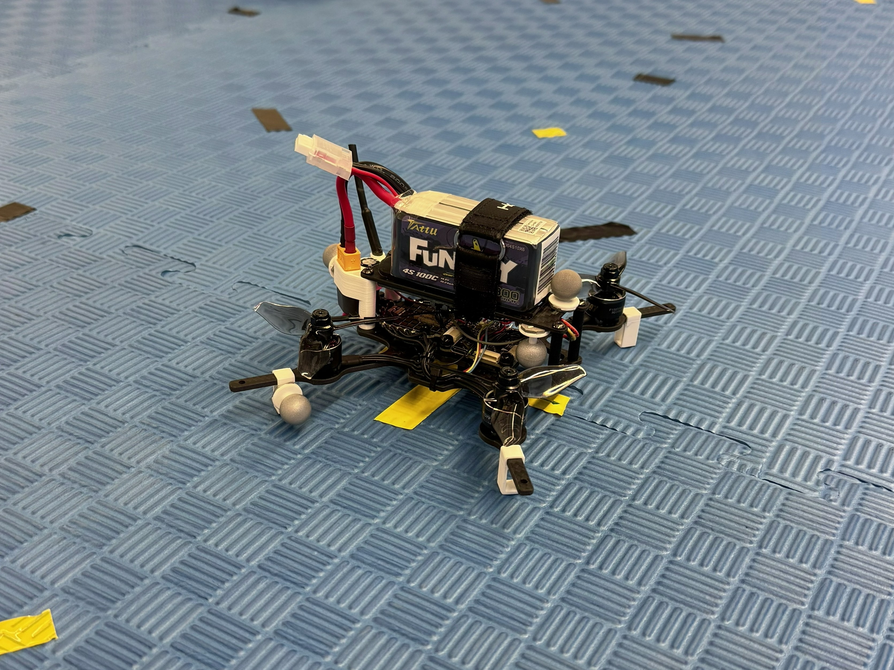
Custom quadrotors
Research quadrotors built from the ground up: hardware selection, PX4 integration, 3D-printed parts, thrust testing, PID and EKF tuning.
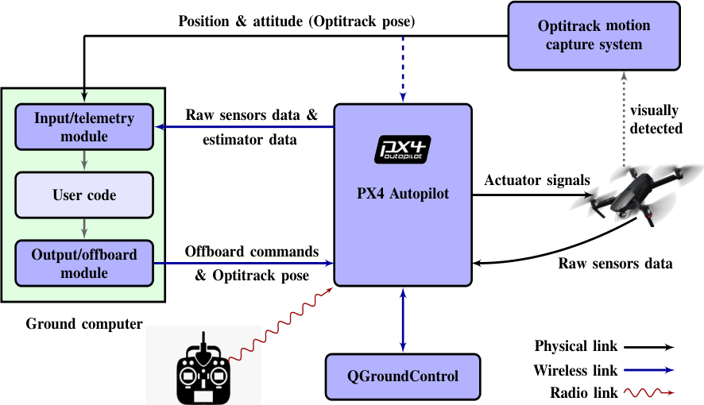
Rapid prototyping for UAV testing
Two routes from algorithm to flight, through Simulink or through ROS and Python. Described in the ICARSC 2021 paper.
Student and personal projects
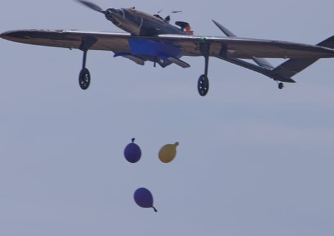
AeroCup Portugal
Co-organising an international student UAV competition. Pictured: the UBI Aeronautics Team's aircraft dropping payloads at the last edition.
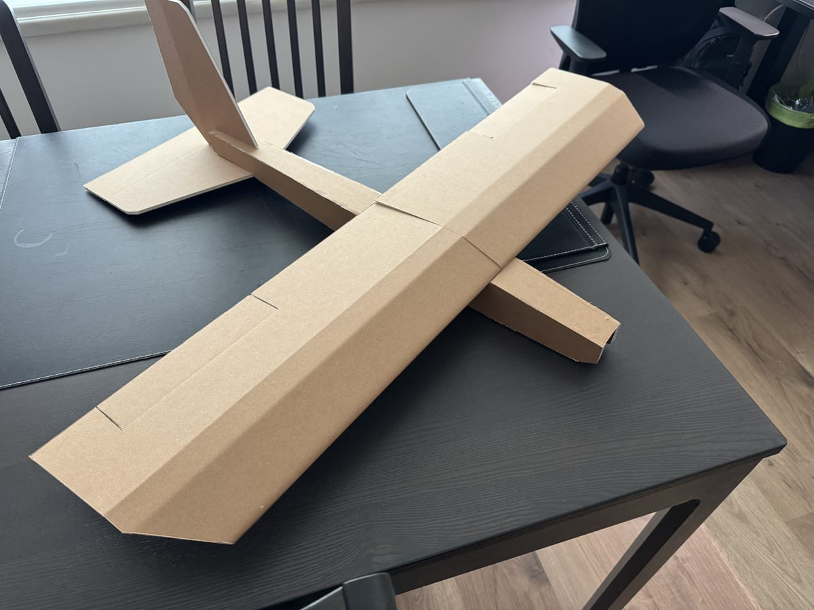
K-Line fixed-wing
A fixed-wing in K-Line, foam board faced with card, built to learn to fly fixed-wing aircraft. Paused for lack of time.
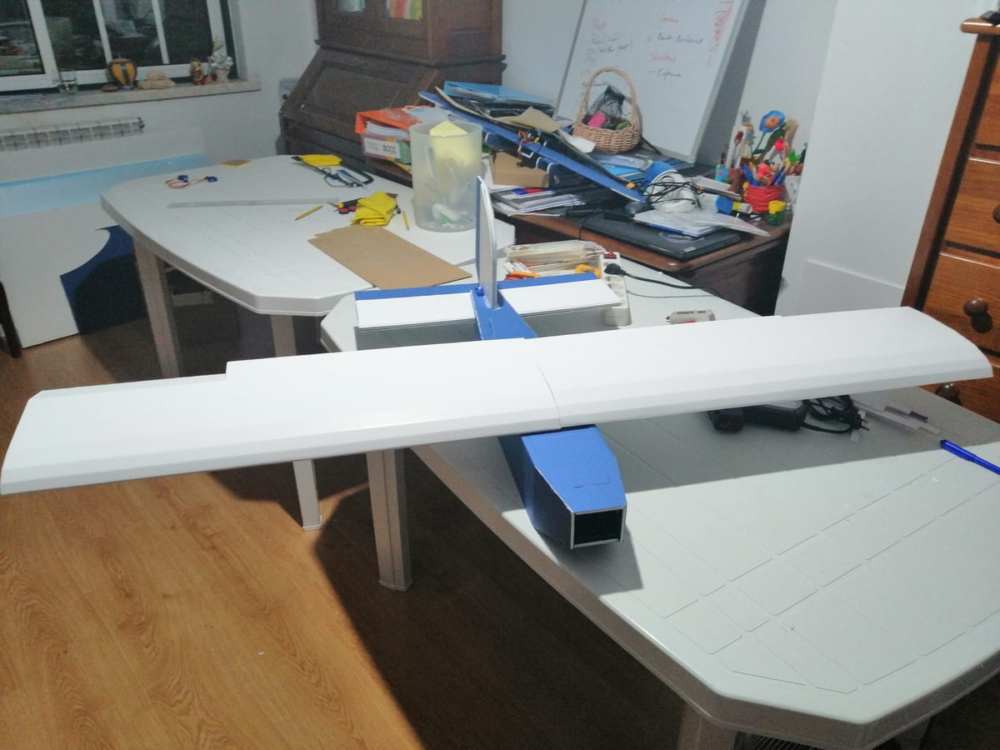
Fixed-wing UAV with friends
Built a fixed-wing UAV with friends.
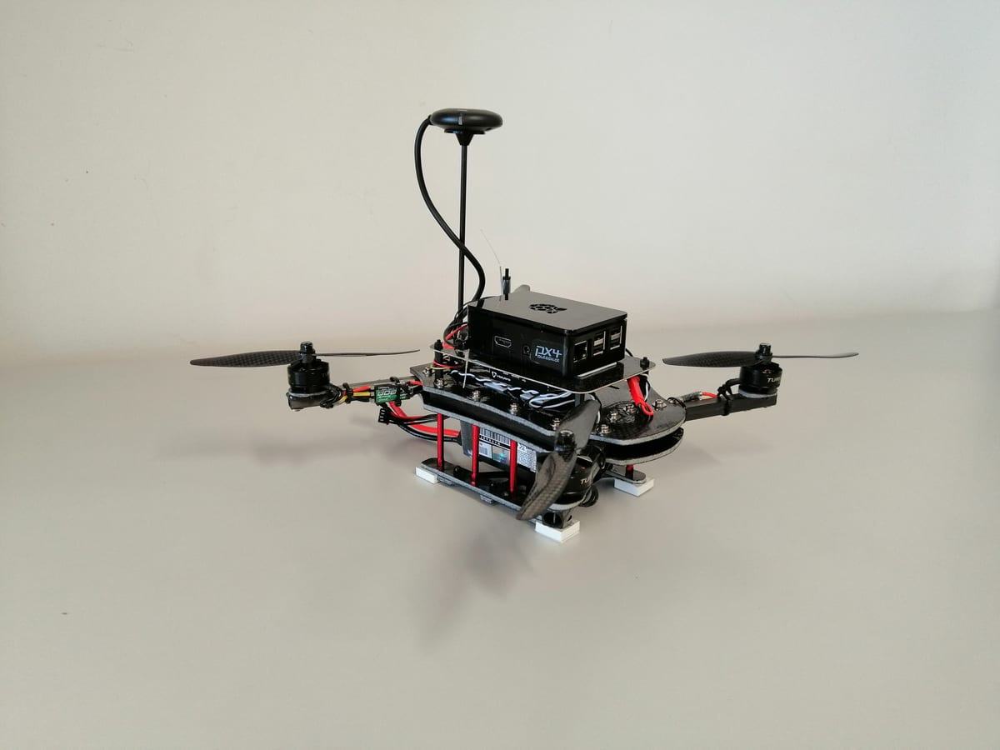
Two quadrotors, designed and built
Designed and built two quadrotors in my spare time, and used them to learn to fly.
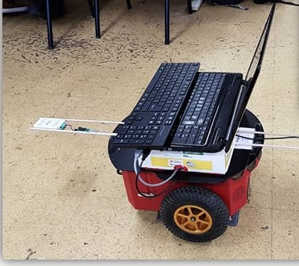
FastSLAM with ultra-wideband ranging
SLAM on a Pioneer robot from ultra-wideband range measurements only, in Python and ROS, in a team of four. Worked in 2D; in 3D, the landmarks' height was hard to observe.
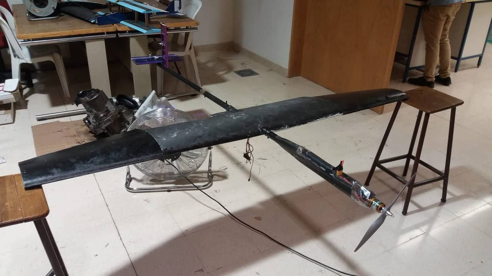
Test Plane
Led a team through the design and construction of a UAV, while mentoring new members for the following year's Air Cargo Challenge.
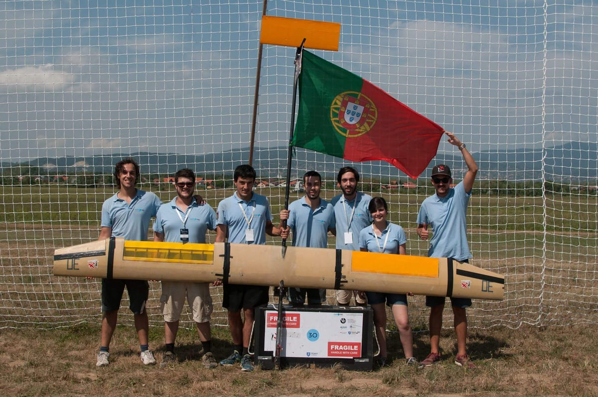
Air Cargo Challenge 2017
Member of the competition team, working on a payload-optimised aircraft: CAD design, system integration and testing.
Publications
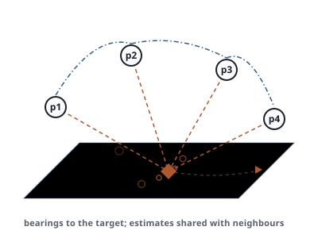
Distributed consensus-based observer design for target state estimation with bearing measurements
A distributed observer that lets a team of agents estimate a target's state cooperatively from bearing-only measurements. The agents use consensus between neighbours rather than central fusion.
Marcelo Jacinto, Pedro Trindade, Francisco F. C. Rego, Rita Cunha
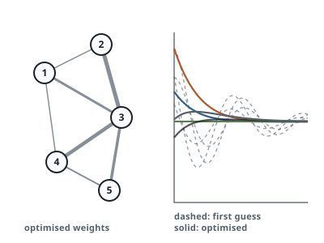
High-order consensus: Optimal controller design
How to choose the best coupling gains and network edge weights for consensus between agents modelled with any number of integrators. The design minimises an LQR-like cost averaged over the initial state, with a truncated Newton method made to fit the structure of the consensus problem.
Pedro Trindade, Pedro Batista, Rita Cunha
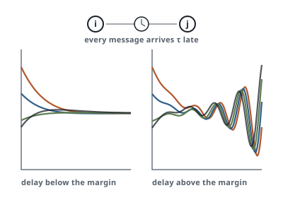
Delay-margin design in consensus for high-order integrator agents
Consensus between agents modelled with any number of integrators, when every message arrives with a constant delay over a directed network. The paper gives a systematic way to design the coupling gains so that the team tolerates a chosen delay margin, which can be made as large as needed at the cost of slower convergence.
Pedro Trindade, Pedro Batista, Rita Cunha
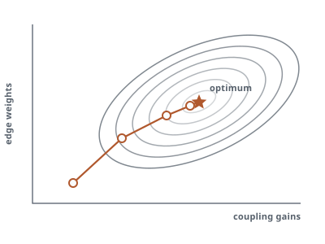
Optimal Consensus for High-Order Integrator Agents
Optimal coupling gains and edge weights for a high-order consensus protocol on a given directed network. The parameters minimise an LQR cost averaged over the initial state, found with a truncated Newton method.
Pedro Trindade, Rita Cunha, Pedro Batista
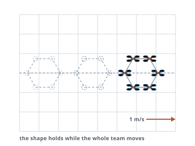
Third-order consensus for robust distributed formation control of double integrator vehicles
A robust, distributed formation tracking controller for vehicles modelled as double integrators, such as multirotors. The paper gives exact bounds on the coupling gains of a third-order consensus protocol for any fixed network, uses it to reject constant disturbances, and validates it in multirotor experiments.
Pedro Trindade, Pedro Batista, Rita Cunha
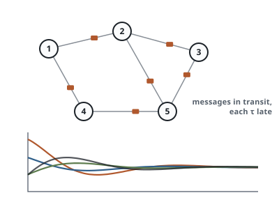
First- and Second-Order Consensus with Constant Uniform Delays
First- and second-order consensus over a directed network when every message arrives with the same constant delay. The paper derives bounds on the coupling gains that still guarantee consensus: exact bounds for the first-order case, and sufficient bounds for the second-order case through a Padé approximation of the delay.
Pedro Trindade, Rita Cunha, Pedro Batista
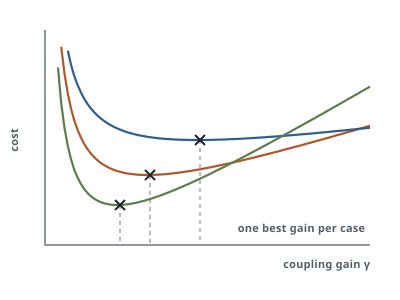
Consensus: Optimal Coupling Gain Design
How to choose the coupling gain of a consensus protocol for single integrator agents. The paper proposes an LQR-based cost, shows that it is convex in the gain, gives its exact gradient, and derives a closed-form optimal gain under simplifying assumptions.
Pedro Trindade, Rita Cunha, Pedro Batista
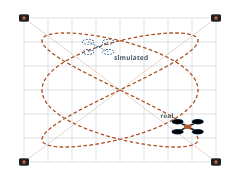
Rapid Development and Prototyping Environment for Testing of Unmanned Aerial Vehicles
An indoor platform for developing and testing control and navigation for unmanned aerial vehicles: motion capture for ground truth, offboard computers, and several quadrotors. Software modules hide the low-level flight and communication details, and a simulator lets real and simulated quadrotors fly together.
Tiago Oliveira, Pedro Trindade, David Cabecinhas, Pedro Batista, Rita Cunha
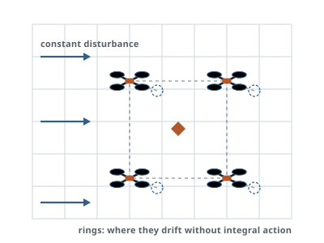
Distributed Formation Control of Double-Integrator Vehicles with Disturbance Rejection
A robust, distributed formation tracking controller for double integrator vehicles, aimed at multirotors. A consensus protocol for triple integrators, with necessary and sufficient conditions for convergence, adds integral action that rejects constant disturbances. Tested in flight on two real quadrotors, flying with simulated ones.
Pedro Trindade, Rita Cunha, Pedro Batista
Theses
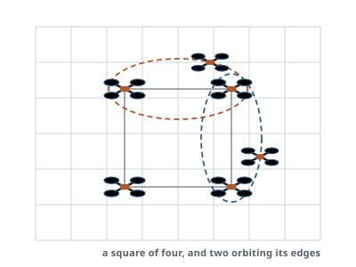
Decentralized Consensus-Based Formation Control of Autonomous Vehicles
How a team of vehicles can reach and hold a formation when each one only knows about its neighbours. The thesis covers consensus for agents described by any number of integrators, formation tracking that rejects constant disturbances, controllers designed to tolerate a chosen communication delay, optimal design of the controller gains, and flight experiments on multirotors.
Advisors: Pedro Batista and Rita Cunha
Pass with Distinction and Honour.
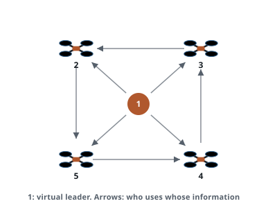
Distributed Formation Control of Double-Integrator Vehicles in the Presence of Unknown Constant Disturbances
A distributed controller that keeps a team of vehicles in formation even when each one is pushed by an unknown constant disturbance.
Advisors: Rita Cunha and Pedro Batista
Graded 20/20.
Best MSc Thesis in Robotics, and Outstanding MSc Thesis Award.
Awards
-
2021 / 22
Certificate of Teaching Excellence, Instituto Superior Técnico, for the Unmanned Aerial Vehicles course.
-
2021
Highly Commended, Industrial Robot journal (Emerald Publishing), for the ICARSC 2021 paper on a rapid prototyping environment for UAVs.
-
2020
Best MSc Thesis in Robotics, Portuguese Society of Robotics.
-
2020
Outstanding MSc Thesis Award, IEEE Portugal Section.
-
2018 / 19
Certificate of Academic Excellence, Instituto Superior Técnico.
-
2017 / 18
Certificate of Academic Merit, Instituto Superior Técnico.
-
2016 / 17
Certificate of Academic Merit, Instituto Superior Técnico.
-
2015 / 16
Certificate of Academic Merit, Instituto Superior Técnico.
-
2014 / 15
Certificate of Academic Merit, Instituto Superior Técnico.